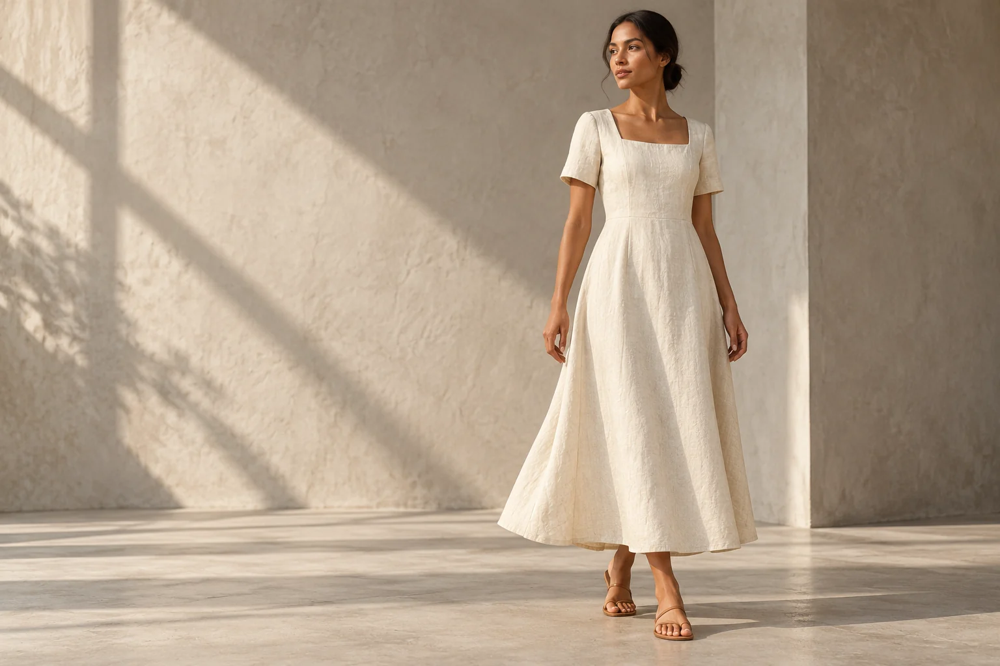

Find the connection.
Bring your product records and photo views together. Use image or text search with the fashion encoder to explore related garments.
GARMENT INTELLIGENCE, IN THE OPEN.
A garment is a thousand small decisions.
Find the connections. See what changed.
Understand what it takes to make.

LOOK BEYOND THE FIRST IMPRESSION.
Crumble brings visual discovery, garment details and production questions into one workspace. Search your own collection, compare designs side by side, and keep the evidence behind every decision.
ONE GARMENT. FOUR POSSIBILITIES.
Same starting point. Different decisions.
Select a design to explore the change.
Long sleeves with cuffs · Two patch pockets
*Illustrative operation times, not factory standards. Sample imagery is AI-generated. The studio demonstrates declared design changes; it does not infer them from these images.
SMALL DETAILS. DIFFERENT WORK.
A longer sleeve. A new pocket. A different fastening. Bring the changes into focus before you decide what they mean.
FROM REFERENCE TO REASONING.
Bring your product records and photo views together. Use image or text search with the fashion encoder to explore related garments.
Compare silhouettes, necklines, sleeves and details. Keep a clear distinction between what is visible, inferred and still unknown.
Map confirmed changes to your operation-time library. Review the suggested SMV range and record a decision tied to its evidence.
OPEN BY DESIGN.
Crumble is an open-source garment intelligence project. Run it locally, inspect the code, and build around your own collection, models and factory standards.
It is a working alpha for exploration and pilots. Visual similarity needs review; production-time suggestions need your own operation studies.
Explore the project on GitHub Set up your own workspaceLOOK CLOSER.